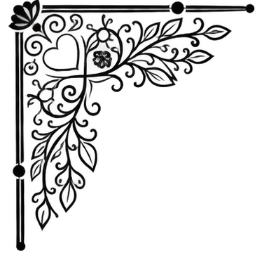
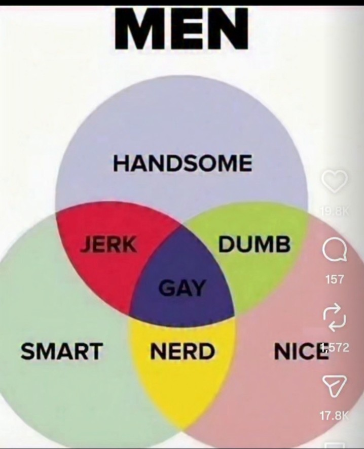

E estou feliz, fui buscar a vassoura pra varrer meu cabelo que cortei ai esqueci que nao precisava olhei pra mainha ela me lançou o olhar de “o que foi?” e eu dei lingua pra ela e ela pra mim e ficamos as duas rindo e vim limpar o cabelo que cortei, se antes eu tava um cavalheiro agora é que irei atrair as donzelas msm.
poxa, queria um beijinho seu, fico triste que nao consegui roubar nem sequer um abraço seu( estou sendo literal, você que fica numas má intenção, não nego que se você bobear vou lhe roubar mais que um ou dois beijos. vantagens de dizer isso aqui, não corro nenhum risco de levar um sermão e ainda te atento, só vi vantagens).
Tu é uma ofensa viva ao meu orgulho, como pode eu conquistar ate mulher com meu charme sem fazer esforço e tu resistir com tanta maestria( já nem fica bobinho por minha causa, lamentável), não gostei, que isso rapaz, eu sei que teus truques não funcionaram comigo tbm mas em minha defesa eu não me atraio por ficar com ninguém pelo corpo e sim pela personalidade, “procure alguém que tem os defeitos que voce consegue lidar” é o que penso, tu se encaixa nos problemas que adoro resolver, muito cheio dos charmes, inclusive, se voce me ver essa semana nao vou perder uma oportunidade de lhe atentar pelo encontro que eu queria ter pra finalmente lhe roubar um beijo e nao pude ter, so pra nao perder o costume, gay :

parei 10 min no insta pra descontrair e me apareceu so coisa de cibersegurança e fiquei na magoa, tipo, eu vi um meme que o cara achou onde a mina morava pq a grama estava molhada, a posiçao do sol tbm e eu fiquei “crlh, achei que so eu descobria as coisas assim”.
ai ja to na maldade pra testar um monte de ferramentas semana que vem, tipo, eu vi uma que pela frequencia de radio consegue ver as pessoas do ambiente ai ja pensei ” nessa voce pega, o cara tenta invadir teu pc, tu invade a internet dele, ve se ele trabalha sozinho ou nao, se mora sozinho ou nao, da pra tirar uma quantidade de dados interessante” e ainda tem um uso pra saude, isso capta a frequencia cardiaca, da pra usar pra saber se a pessoa mentiu, se o tem problema cardiaco, se algo ou alguem deixou essa pessoa nervosa e fazer todo um conjunto investigativo a partir disso achar os dados que precisa e captura o hacker, ou no caso de saude da pra usar a frequencia cardiaca pra calcular o padrao em que a pessoa piora e associar o padrao do coraçao dela a rotina que a pessoa leva, o que achas?
ainda pensei na possibilidade disso virar ferramenta de investigaçao, pq por exemplo, internet de bairro, proteçao mediana, perfeita pra fornecer dados pra policia ou pra quem quiser as analises, no meu caso especifico eu consigo compensar minha falta de conhecimento usando o tarot pra direto onde eu preciso olhar ( tem limite pra ate onde posso compensar minha falta de conhecimento das ferramentas certas mas vou quebrar esse limite aos poucos) caramba cara, isso é tao divertido, mane lgpd, negocio é conectar dados, isso é divertido.
eu ia te mandar uma foto de “tomara que caia” pra tu ver meu cabelo cortado e te atentar mas achei essa mais interressante e to estudando, beijinhos medroso, quero ver se vai resistir as minhas tecnicas se ficar a sos comigo, vacila pra ver, ne so tu que tem tecnicas n hehe, tem muitas que quero testar em voce, duvido voce conseguir continuar resistindo princeso.